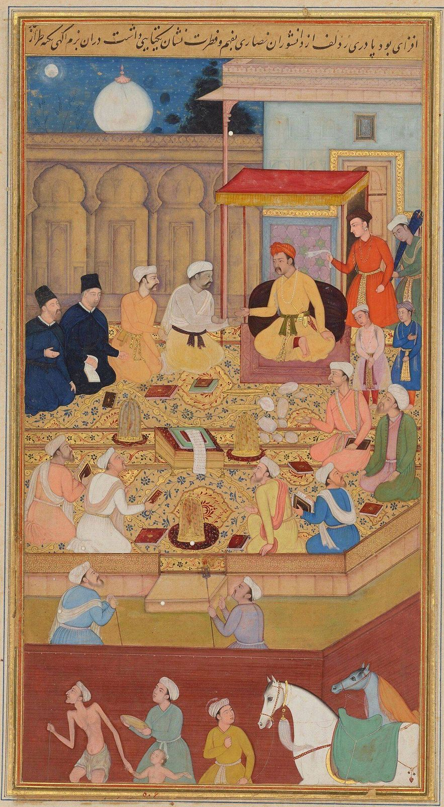
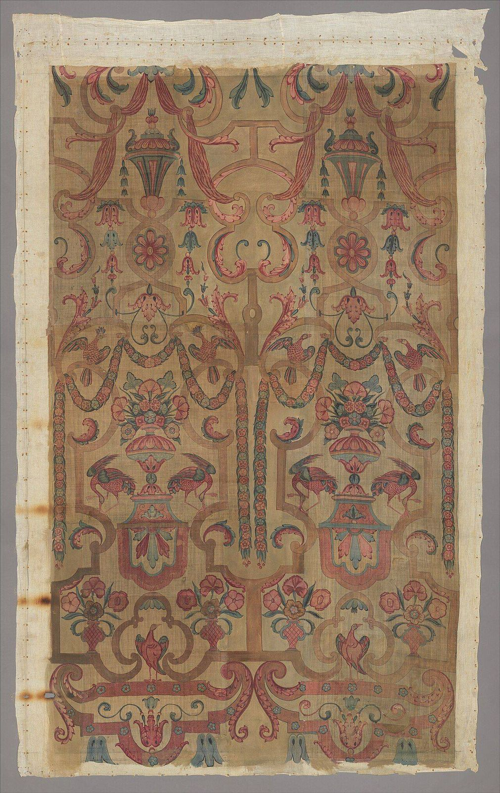
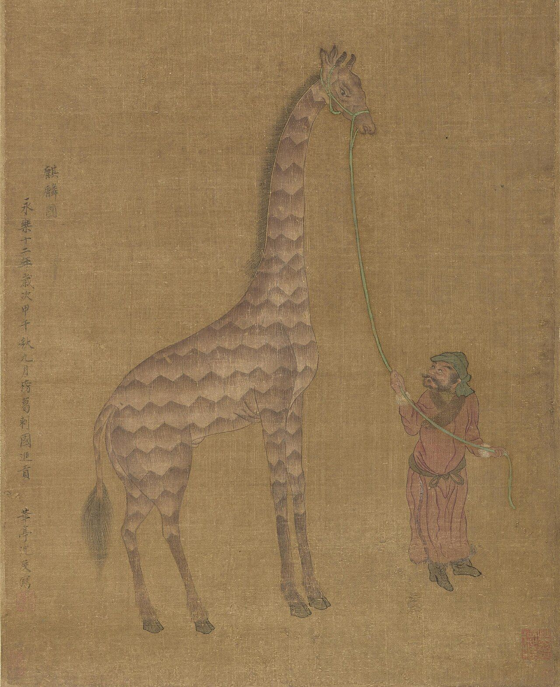
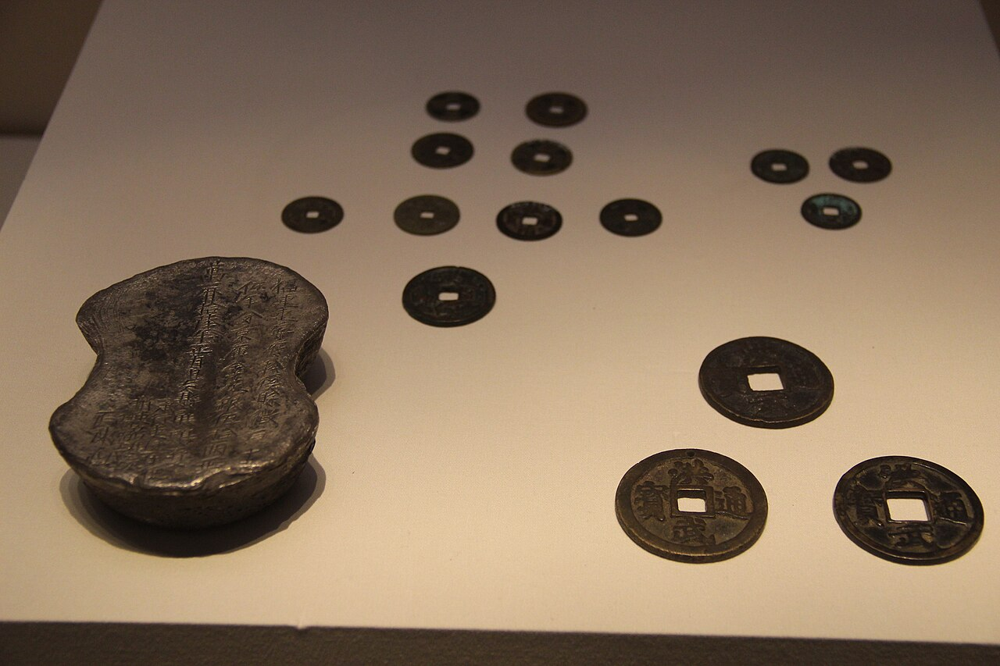
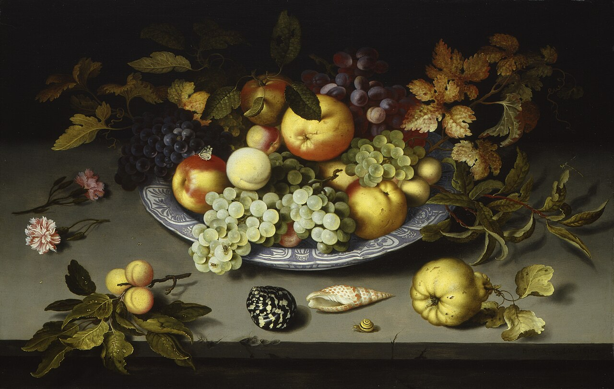

歴史・地理 History & Geographyそのころ、 世界で いちばん 豊かだったのは どこ？ 16〜17世紀、東にはオスマン帝国、ムガル帝国、明という3つの大きな帝国がありました。ヨーロッパの人々は、その品を買うために、アメリカ大陸の銀を東へ送り続けます。地図と棒グラフで銀の行き先を追いながら、「豊かさ」の測り方まで考えてみませんか。
2026.11.11 UP 約8分で読める 文：SOMOSOMO編集部
写真：タージ・マハル／Almbauer（2018年、CC0）
Previously
前回は、1517年のルターの問いかけから、西ヨーロッパに1つだった教会が、カトリックとプロテスタントの2つに割れた話でした。ヨーロッパが宗教をめぐって争っていたそのころ、東の世界では何が起きていたのでしょう。
地中海の海の底に、長さ約43mの商船の残骸が眠っています。2020年に発表された調査で、その姿がわかりました。1630年ごろ、エジプトからイスタンブールへ向かう途中で沈んだとみられる、オスマン帝国の船です。積み荷には、中国の明の時代の磁器、インドのコショウ、コーヒーのポットが混じっていました。
このころの世界には、3つの大きな帝国が東西に並んでいました。トルコのオスマン帝国、インドのムガル帝国、そして中国の明です。ヨーロッパの国々が新しい海の道で世界へ出ていった時代に、世界でいちばん豊かだったのは、どこだったのでしょうか 。
In a word
国全体で見れば、明の中国 とインド （ムガル帝国など）。2つで世界の生産の約半分を生んでいた。
01
The Crossroads
オスマン帝国は、 東と西の 品が行き交う 十字路だった
まず、3つの帝国の場所を地図で見ておきましょう。いちばん西にあるのが、第19話で1453年にコンスタンティノープルを落としたオスマン帝国です。この町は、いまのトルコ最大の都市イスタンブールにあたります。
Fig.01 16〜17世紀の 3つの帝国と、 中国へ渡った銀
オスマン帝国
ムガル帝国
明
インド洋
太平洋
日本
イスタンブール
アーグラ
北京
マニラ
マカオ
帝国の都
アメリカ大陸の銀が着いた港
そのほかの場所
マニラから中国へ渡った銀（おおよそ）
日本から中国へ渡った銀（おおよそ）
見どころは、3つの帝国の都が、地中海から中国まで東西に並んでいること。赤い線は、4章で見る、中国へ流れこんだ銀の道です。帝国の名前はおおよその位置で、道もおおよそです。地図は Natural Earth（パブリックドメイン）から作りました。
オスマン帝国が最盛期を迎えたのは、1520年から1566年まで治めたスレイマン1世のころです。帝国の人々からは「立法者」と呼ばれました。1521年にベオグラード、1526年にはモハーチの戦いでハンガリーを破り、ヨーロッパの奥へ進みます。
1529年にはウィーンを囲みましたが、大雨で大砲を運べず、引き返しました。
オスマン帝国の強みは、軍よりも、東と西をつなぐ場所にあったともいえます。帝国の船は、地中海から紅海、ペルシア湾までの海を押さえ、インドのムガル帝国とも商いを続けました。冒頭の沈没船の積み荷は、この道を通って運ばれてきた品でした。
第21話で見たように、1453年のあと、ヨーロッパでは東の商いへの不安が強まりました。ただ、オスマン帝国が実際に道をふさいだという裏づけは乏しく、そのあともヨーロッパに届く香辛料が減ったようすはないとされます。
スレイマニエ・モスク スレイマン1世が建てさせ、宮廷の建築家ミマール・スィナンが設計したモスクです。碑文によれば、1550年に建て始め、1557年に開かれました。まわりには学校や、病院、炊き出しの台所も設けられました。写真：SüleymaniyeMosqueIstanbul (cropped) ／Hunanuk（2022年、CC0）
02
Cotton and Courts
ムガル帝国の 木綿の布が、 世界の銀を 引き寄せた
インドのムガル帝国は、1526年、中央アジアから来たバーブルが、北インドのパーニーパットでデリーの王を破って開いた国です。バーブルは父の側で、第18話のモンゴル帝国のあとに中央アジアで大きな国を建てたティムールの子孫、母の側ではチンギス・カンの子孫でした。
国を大きく固めたのは、3代目の皇帝アクバル（在位1556〜1605年）です。帝国はイスラム教の王朝でしたが、治める土地には、ヒンドゥー教をはじめ、さまざまな宗教の人々が暮らしていました。アクバルは、イスラム教徒でない人々にかけていた税をやめ、その人々を高い役にもつけました。
1575年には、都ファテープル・シークリーに「礼拝の家」と呼ばれる建物を建て、学者たちに話し合いをさせます。はじめはイスラム教徒だけでしたが、やがてヒンドゥー教、ジャイナ教、ユダヤ教の人々や、キリスト教のイエズス会の宣教師も招かれました。

礼拝の家での話し合い アクバルの一代記『アクバル・ナーマ』の絵で、1605年ごろ、画家ナル・スィングが描いたものです。左の黒い服の2人は、イエズス会の宣教師とされます。写真：Jesuits at Akbar's court ／ナル・スィング（1605年ごろ、パブリックドメイン）
ムガル帝国でいちばん大きな産業は、布づくり、とくに木綿の布でした。薄く軽い布や、色あざやかに染めた布は、ヨーロッパでも欲しがられ、その流行を左右するほどになります。コショウや藍（あい。青い染料）、絹も売れました。
インドの品を求める人々が払う金や銀は、絶えずインドへ流れこみました。帝国は自分ではほとんど金を掘らず、外から入った金銀でお金を作っています。税も、農民の取れ高の半分を超えるほどの重さで、銀のお金で納められました。
扉の写真のタージ・マハルは、5代目の皇帝シャー・ジャハーンが、亡くなった妃ムムターズ・マハルのために、都アーグラに建てた墓です。1632年に工事が始まり、まわりの建物と庭まで仕上がったのは1653年とされます。

インドで描き染めた木綿の布 少しあとの時代の布ですが、インド南東部のコロマンデル海岸でつくられた、壁に掛ける布です。18世紀はじめのもので、フランスの図案家ベラン風の模様が手で描き染められています。インドの木綿の布は、こうして遠くの国の注文にも応えていました。写真：Chintz wall panel ／ジャン・ベラン風の図案、インドの職人（名は不明）（18世紀はじめ、CC0。メトロポリタン美術館蔵）
03
The Ming
明は 海の向こうへ 艦隊を送り、 やがて銀の国になった
中国の明は、第18話で見たように、1368年にモンゴルの元を北へ追いやって建った国です。3代目の永楽帝は都を北京に移し、1406年から1420年にかけて宮殿の紫禁城を建てました。紫禁城は、このあと約500年、中国の皇帝の住まいになります。
紫禁城の太和殿 北京の紫禁城の中心にある建物で、皇帝の儀式の場でした。紫禁城は、いまも残る世界でいちばん大きな宮殿の建物群とされます。写真：20200110 Hall of Supreme Harmony courtyard-1 ／Balon Greyjoy（2020年、CC0）
永楽帝は、海にも目を向けました。1405年から孫の代の1433年まで、イスラム教徒の家に生まれた宮廷の役人、鄭和（ていわ）が率いる大艦隊が、7回にわたって東南アジアからインド洋へ出ていきます。1回目には、約2万7,000人の兵を連れていけという命令が出ています。
それだけの艦隊を送れるほど、明は豊かでした。
艦隊はインドのカリカット、ペルシア湾の入り口のホルムズ、アラビア半島、そしてアフリカの東の海岸まで届きました。各地の使いが明の都を訪ね、ライオンやダチョウ、キリンなどの珍しい動物も贈られています。

明の都に来たキリン 1414年、ベンガル（いまのバングラデシュのあたり）の使いが永楽帝に贈ったキリンを描いた絵です。宮廷の画家、沈度の作とされますが、16世紀の別の画家の作とみる美術館もあります。写真：Tribute Giraffe with Attendant （部分）／沈度とされる（1414年ごろ。16世紀の写しとみる説もある。パブリックドメイン。フィラデルフィア美術館蔵）
けれども1433年を最後に、大艦隊の航海は止まります。北のモンゴルとの戦いに、お金と関心が回されたことが理由の1つとされますが、はっきりしたことはわかっていません。禁じられながらも、民間の海の商いはその後も続きました。
明の暮らしを大きく変えたのは、お金でした。第16話で見た宋の紙幣は、明でも刷られましたが、刷りすぎて値打ちが何度も下がり、人々に信用されなくなります。代わりに使われるようになったのが、銀の塊でした。
16世紀のはじめから、税や働きに出る務めを、まとめて銀で納めさせるやり方が広がります。「一条鞭法（いちじょうべんぽう）」と呼ばれ、1580年、内閣の筆頭の張居正（ちょうきょせい）が国じゅうに広めました。広い明の国の税が、銀で払われるようになりました。
04
Silver Flows East
世界の銀は、 なぜ 東へ 流れたのか
ちょうどそのころ、地球の反対側で銀の山が見つかります。1545年、いまのボリビアのポトシです。1500年から1800年までに、ボリビアとメキシコの鉱山は世界の銀の約80%を生み、その約30%が最後は中国にたどり着いたとされます。
道は2つありました。1つは大西洋を渡ってスペインへ運ばれ、ヨーロッパの商人の手でアジアへ向かう道。もう1つは、1565年に始まった、メキシコのアカプルコとフィリピンのマニラを結ぶ太平洋の船です。マニラには中国の福建の商人が、絹や磁器を売りにやって来ました。
Fig.02 銀が 東へ流れ、 品が 西へ流れた
1545年〜 アメリカ大陸で銀を掘る ポトシやメキシコの鉱山。スペインのものになった 海の道 船でアジアへ運ぶ 大西洋からヨーロッパ経由で、太平洋からマニラ経由で アジアで 銀で品を買う 明の絹と磁器、インドの木綿の布やコショウ 明では 銀で税を納める 銀がいつも足りず、外の銀を引き寄せた
見どころは、銀とアジアの品が、反対の向きに流れていること。図は本文の内容をまとめたもので、品はその一部です。
ヨーロッパの人々は、なぜ品ではなく銀を払ったのでしょう。中国の人々が欲しがるような品を、ヨーロッパはほとんど持っていませんでした。足りない分を、新しく掘った銀で埋めたのです。しかも明では、銀の値打ちがほかの土地より高く、運ぶだけでもうけが出ました。

明の銅銭と銀の塊 北京の中国国家博物館の展示で、写真の題によれば明の時代のものです。日々の買い物は穴あきの銅銭、大きな支払いと税は重さで値打ちを量る銀、と使い分けられました。写真：Ming Coins & Silver Ingot ／Gary Todd（2011年、CC0）
こうして集まった富を、国全体の生産の大きさ（GDP。国内で1年に生み出されたものの値打ちの合計）で見るとどうなるでしょう。昔の GDP を推計した経済の歴史家マディソンの数字では、1600年、明の中国が世界の約29%、インドが約22%を占めていました。
2つを合わせると、世界の約半分です。西ヨーロッパの国々をすべて足しても約20%でした。もちろん、記録の少ない時代の数字なので、推計の幅は大きく、批判もあります。それでもこの推計では、1500・1600・1700年のどの推計でも、中国とインドが1位と2位でした。
Fig.03 1600年の 世界の生産に 占める割合
中国（明） 約29%
インド 約22%
西ヨーロッパ計 約20%
日本 約3%
見どころは、中国とインドの2本だけで、世界の半分に届くこと。インドは、いまのパキスタンやバングラデシュ、スリランカなども含むインド亜大陸全体の数字で、ムガル帝国の外の南の地域も入っています。オスマン帝国は今の国境で数字を分けにくいため、ここには入れていません。出典：マディソン『世界経済の輪郭』（2007年）の推計を Wikipedia 英語版の一覧から計算。
オランダの画家が1617年に描いた次の静物画には、果物を盛った明の磁器の皿が描かれています。海を越えてきた青い模様の器は、ヨーロッパでは豊かさを見せる品でした。ヨーロッパの銀が東へ流れ、東の品が西の食卓に並びました。

明の磁器の皿と果物 オランダの画家ファン・デル・アストが1617年に描いた絵です。皿は、明の万暦帝の時代（1573〜1620年）にヨーロッパ向けに多く作られた、白地に青の模様の磁器（クラーク磁器）とされます。写真：Still Life of Fruit on a Kraak Porcelain Dish ／バルタザール・ファン・デル・アスト（1617年、パブリックドメイン。カリアー美術館蔵）
まとめると、16〜17世紀の世界で、作るものがいちばん多かったのは中国とムガル帝国のインドでした。絹や磁器、木綿の布を世界が欲しがり、その代金の銀が、アメリカ大陸からヨーロッパや太平洋を通って東へ流れこみます。オスマン帝国は、その東と西の間に立つ十字路でした。
05
By the Numbers
数字で見る 東の帝国の富
約 25% 1750年ごろまで、インドが占めていた世界の工業の生産（布づくりなど）の割合（推計）Mughal Empire（Wikipedia）による
2倍 明の土地での銀の値打ちは、ほかの土地のおよそ2倍だった。運べば、その差がもうけになったGlobal silver trade（Wikipedia）による
2万人超 タージ・マハルの工事で働いた職人と働き手の数。銀のお金で税を集めた帝国の、富の大きさを物語るTaj Mahal（Wikipedia）による
Here's the Fun Part
ここが面白い！「いちばん大きい」と 「いちばん豊か」は、 同じではなかった
マディソンの GDP は、一人あたりの生産を推計し、それに人口をかけて出しています。明の人口は、終わりごろで1億6,000万〜2億人と推計されます。国全体の大きさは、まず人の多さを映した数字です。
では、一人ひとりの暮らしはどうだったのでしょう。ある研究では、1600年ごろ、イングランドの賃金は、中国でいちばん栄えた長江の河口のあたりにくらべ、1日の賃金で買える銀の量では約3倍、小麦の量でも約15%多かったとされます。
一方で、アジアの豊かな地域の暮らしは18世紀の後半（1750〜1800年ごろ）までヨーロッパと並んでいた、とみる研究者もいて、決着はついていません。
つまり、題の問いの答えは、何で測るかで変わります。国全体の大きさなら明とインド。一人あたりでは、西ヨーロッパの一部が先を行っていた、という見方も強いのです 。
次にニュースで「GDP 世界◯位」と聞いたら、それが国全体の数字か、一人あたりの数字か、確かめてみてください。同じ国でも、まるで違う順位が見えてくるはずです。
To be continued
明へ流れこんだ銀には、アメリカ大陸のほかに、もう1つ大きな出どころがありました。日本です。1526年に見つかった石見銀山（いまの島根県）などの鉱山で、17世紀のはじめ、日本は世界の銀の約3分の1を生んでいたとされます。
明が日本との直接の商いを禁じたため、おもに間に入って中国の絹を日本の銀と替えたのが、ポルトガルの商人でした。ポルトガルの船は、日本の銀をマカオへ運びました。
銀や絹とともに、キリスト教も日本へ入ってきます。1549年には、イエズス会の宣教師ザビエルが鹿児島に上陸しています。銀で世界とつながった日本は、なぜやがて国を閉じたのでしょうか。
出典・参考
Economic history of the Ottoman Empire （Wikipedia 英語版）：2020年に発表された1630年ごろの沈没船（長さ43m、エジプトからコンスタンティノープルへ、明の磁器・インドのコショウ・コーヒーのポット・アラビアの香）、紅海とインド洋と地中海を結ぶ道、オスマン帝国がシルクロードをふさいだという説に研究の裏づけがないこと、1453年のあとに香辛料の輸入が減らなかったことSuleiman the Magnificent （Wikipedia 英語版）：在位1520〜1566年、「立法者（カーヌーニー）」の呼び名、1521年のベオグラード、1526年のモハーチ、地中海から紅海・ペルシア湾までの海、ムガル帝国との商いSiege of Vienna (1529) （Wikipedia 英語版）：1529年9月27日〜10月15日、春の大雨、泥にはまった大砲、失われたラクダSüleymaniye Mosque ・Mimar Sinan （Wikipedia 英語版）：設計者スィナン、碑文の1550年と1557年、学校・炊き出しの台所・病院Mughal Empire ・Babur （Wikipedia 英語版）：1526年のパーニーパット、ティムールとチンギス・カンの血筋、木綿の布づくりが最大の産業だったこと、ヨーロッパの流行がインドの布に頼ったこと、外から入った金銀でお金を作ったこと、取れ高の半分を超える税を銀のお金で納めたこと、1750年まで世界の工業の生産の約25%（数字の欄）Akbar （Wikipedia 英語版）：在位1556〜1605年、宗教の違う人々の多い帝国で平和と秩序を保つため、税をやめ高い役につけたこと、1575年の「礼拝の家」、1579年のイエズス会の招きTaj Mahal （Wikipedia 英語版）：シャー・ジャハーンとムムターズ・マハル、1632年の着工、1653年の完成、2万人を超える職人と働き手（数字の欄）Ming dynasty ・Forbidden City （Wikipedia 英語版）：紙幣の信用が失われ銀が使われたこと、明の終わりごろの人口1億6,000万〜2億人、ポルトガルの商人が中国の絹を日本の銀と替えたこと（次の話へ）、紫禁城の1406〜1420年の建設と1420〜1924年の皇帝の住まい、いまに残る最大の宮殿の建物群Zheng He ・Ming treasure voyages （Wikipedia 英語版）：イスラム教徒の家の生まれ、1405〜1433年の7回の航海、1回目の2万7,000人の兵の命令、カリカット・ホルムズ・アラビア半島・東アフリカ、贈られた動物、1433年の終わりとモンゴルとの戦いへの資金の振り向け、その後も続いた海の商いSingle whip law （Wikipedia 英語版）：16世紀はじめに始まり、1580年に張居正が国じゅうに広めたこと、税と務めを銀でまとめて納めさせたこと、日本とスペイン領アメリカからの銀の輸入が増えたことGlobal silver trade from the 16th to 19th centuries （Wikipedia 英語版）：1545年のポトシ、1500〜1800年にボリビアとメキシコが世界の銀の約80%を生み約30%が中国に渡ったこと、ヨーロッパに中国の欲しがる品がなく銀で埋めたこと、明での銀の値打ちがほかの約2倍（数字の欄）Manila galleon （Wikipedia 英語版）：1565〜1815年のアカプルコとマニラの航路、福建の商人が絹や磁器を売りにマニラへ来たことList of regions by past GDP (PPP) （Wikipedia 英語版）：マディソン『Contours of the World Economy, 1–2030 AD』（2007年）の1600年の推計（世界3,315億6,200万、中国960億、インド亜大陸742億5,000万、西ヨーロッパ計656億200万、日本96億2,000万。1990年の国際ドル）から割合を計算、GDP が一人あたりの推計に人口をかけて出されること、推計への批判Great Divergence （Wikipedia 英語版）：1600年ごろのイングランドと長江の河口のあたりの賃金の比較（ブロードベリーの研究）、アジアの豊かな地域が18世紀の後半までヨーロッパと並んでいたとみる研究Kraak ware （Wikipedia 英語版）：明の万暦帝のころを中心に作られた輸出向けの磁器Iwami Ginzan Silver Mine ・Francis Xavier （Wikipedia 英語版）：1526年の発見、1600年代はじめに日本が世界の銀の約3分の1を生んだこと、1549年8月15日のザビエルの鹿児島上陸（次の話へ）地図（Fig.01）：Natural Earth （パブリックドメイン）の海岸線から作成。町の位置と銀の道はおおよそ
写真：CC0 またはパブリックドメイン。扉はインドのアーグラのタージ・マハル（Taj Mahal 2018 ／Almbauer、2018年、CC0）。本文中の写真のクレジットは、それぞれの写真の下に記しています